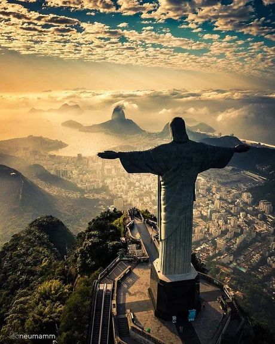
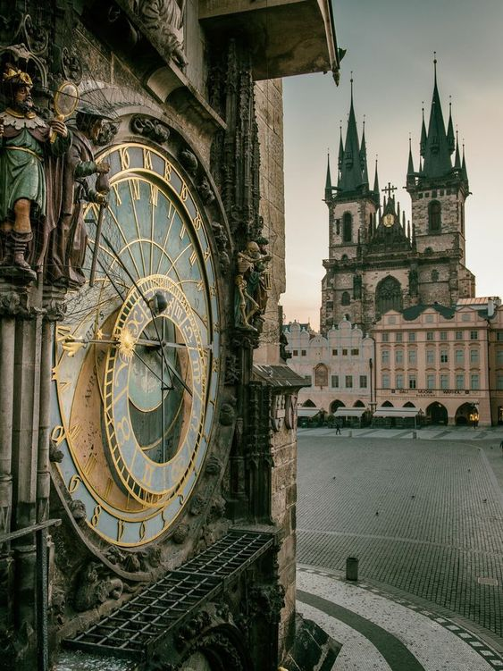

Las fotos mas destacadas
Autor: Richard Avedon
Una fotografia IMPRECIONANTE, muchos de nuestros clientes la descatan por su calidad y belleza.
Autor: Vivian Maier
¿Has visto fotografias de un reloj con ese detalle? Nuestra fotografa vivian maier logro captar esta maravilla.
Autor: Anne Geddes
Esta fotografia retrata muy bien el trabajo, esfuezo y dedicación.
Autor: Steve McCurry
El reflejo perfecto ¿no existe? Pues esta fotografia te demostrara todo lo contrario.
Las maravillas del mundo
En el corazón de la fotografía yaciendo la esencia de la serenidad, esta imagen captura la magia intemporal de un pintoresco pueblo. Las fachadas de colores vivos danzan bajo la luz dorada del atardecer, revelando una arquitectura que ha sido testigo de generaciones.
Autor: Elliott Erwitt
Más fotografias
Los templos mayas son antiguas construcciones de piedra que formaban parte de las ciudades de la civilización maya
Autor: Elliott Erwitt
Fotografia de una cascada en un paisaje rocoso con un lecho de río de color rojo. La cascada es pequeña y cae sobre un saliente de roca. El lecho del río es de un color rojo vibrante con parches de verde y amarillo.
Autor: Anne Geddes
Un hermoso paisaje montañoso con un lago turquesa en primer plano. El lago está rodeado de montañas rocosas con nieve en las cumbres.
Autor: Richard Avedon
un parque con un estanque y una fuente. El estanque está en primer plano y tiene nenúfares y otras plantas en él. La fuente está en el centro del estanque y lanza agua hacia arriba.
Autor: Jeremy Chou
La calle está pavimentada con adoquines y bordeada de casas de entramado de madera de colores. Las casas tienen cajas de flores y cestas colgantes con flores de colores. Hay una pequeña fuente en el centro de la calle.
Autor: Annie Leibovitz
El cielo está lleno de nubes de color naranja y amarillo. El pueblo está construido sobre una colina y los edificios son de colores. La playa está vacía y el agua está tranquila. El pueblo se refleja en el agua.
Autor: Vivian Maier
La Torre Inclinada de Pisa en Italia. La torre es una estructura de piedra blanca con múltiples niveles de arcos. La torre se inclina hacia la derecha. El cielo es azul con nubes blancas.
Autor: Mario Testino
Catedral de San Basilio en Moscú, Rusia. La catedral es un edificio colorido y ornamentado con múltiples cúpulas de cebolla. Las cúpulas son de color rojo, verde y dorado.
Autor: Anne Geddes
Esta es una fotografia de Machu Picchu, una antigua ciudadela inca en Perú. La imagen está tomada desde un punto alto, mirando hacia abajo a las ruinas. Las ruinas están rodeadas de montañas y valles escarpados.
Autor: Richard Avedon
La Gran Muralla China. Es un lugar muy interesante y lleno de historia. ¿Sabías que la muralla se puede ver desde el espacio? Algunas personas dicen que es el único monumento humano visible desde allí.
Autor: Jeremy Chou